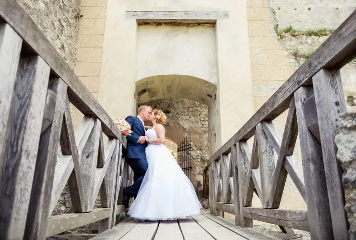
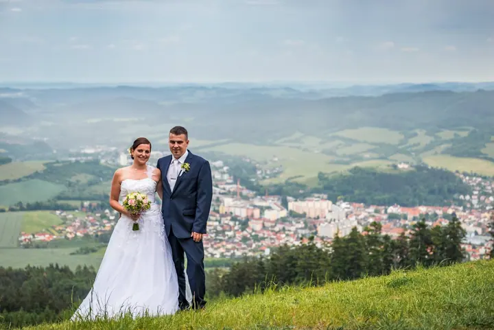

jedna
Svatby
Svatební fotografie tvoří výraznou část mé práce. Svatební den fotím s citem pro přirozenost a emoce, v pohodové atmosféře.


Jmenuji se Tomáš Mašek a jsem fotograf na volné noze. Působím převážně v Sušici, kde mám vlastní fotoateliér. Věnuji se hlavně svatbám a portrétům, ale fotím i pro firmy.
Více o mně
Co fotím
jedna
Svatební fotografie tvoří výraznou část mé práce. Svatební den fotím s citem pro přirozenost a emoce, v pohodové atmosféře.
dvě
Portréty fotím ve vlastním ateliéru v Sušici i venku. Záleží mi na vstřícném přístupu a na tom, abyste se před objektivem cítili dobře.
tři
Komerční focení a vizuální obsah, který podporuje vaši značku a oslovuje zákazníky.
Založil jsem Svatební dílnu. Společně se stejně nadšenými lidmi nabízíme služby spojené s organizováním svatebního dne.
Fotky vznikají z komunikace, respektu a důvěry


Za objektivem
Fotka je mi zábavou již řadu let. Jsem nezávislý fotograf s citem pro přirozenost a emoce a tvořím v Sušici, kde mám vlastní ateliér na nábřeží Jana Seitze.
Výraznou část mé práce tvoří svatební a portrétní fotografie. Věnuji se také komerčnímu focení a tvorbě vizuálního obsahu, který podporuje značku a oslovuje zákazníky.
Při focení si zakládám na vstřícném, profesionálním přístupu a pohodové atmosféře. Založil jsem také Svatební dílnu, kde se stejně nadšenými lidmi pomáháme s organizací celého svatebního dne.
Tomáš
Napište mi nebo zavolejte a domluvíme si schůzku. Probereme termín, místo a to, jak si focení představujete.
Společně naplánujeme průběh dne a vhodná místa na focení. Pokud chcete, se zbytkem organizace vám pomůže Svatební dílna.
Fotím v klidu a pohodě, s důrazem na přirozenost a emoce. Snažím se, abyste se před objektivem cítili dobře.
Fotky pečlivě vyberu a upravím a pak vám je předám. Termín dodání si domluvíme předem.
Portfolio
Fotografie jsou ilustrační
Otázky
Působím převážně v Sušici a okolí, kde mám vlastní ateliér. Pokud máte na mysli jiné místo, napište mi a domluvíme se.
Ano. Založil jsem Svatební dílnu, kde se stejně nadšenými lidmi nabízíme služby spojené s organizováním svatebního dne.
Ano, věnuji se komerčnímu focení a tvorbě vizuálního obsahu, který podporuje značku a oslovuje zákazníky.
Cena záleží na rozsahu a typu focení. Ozvěte se mi a připravím vám nabídku na míru.
Napište pár vět o tom, co si představujete. · +420 728 080 081